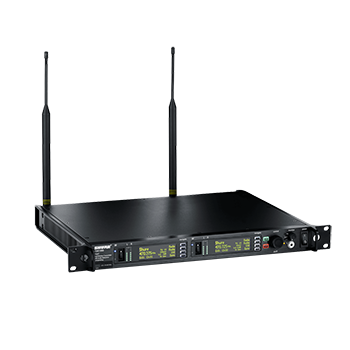

Transmitter
P10T
Wireless Transmitter
Shure's P10T is a networkable, full-rack, dual-channel wireless transmitter used in conjunction with the P10R Wireless Bodypack Receiver as part of the PSM 1000 Personal Monitor System. It combines state-of-the-art technology with touring-grade features for professional monitoring applications of any size, offering a 72 MHz to 80 MHz tuning bandwidth and networked remote control via Wireless Workbench software.